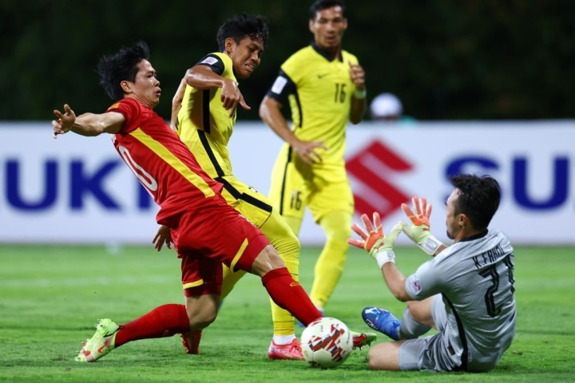
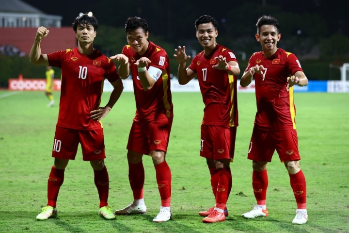

Chiến thắng của Việt Nam trước Malaysia là lời đáp trả tới Thái Lan
Khác biệt về lực lượng là yếu tố quyết định dẫn tới chiến thắng của tuyển Việt Nam trước Malaysia trong trận cầu tái hiện chung kết AFF Cup 2018 tối 12/12.
Khác biệt về lực lượng là yếu tố quyết định dẫn tới chiến thắng của tuyển Việt Nam trước Malaysia trong trận cầu tái hiện chung kết AFF Cup 2018 tối 12/12. Bước ngoặt dẫn tới chiến thắng của tuyển Việt Nam tới chỉ sau một quyền thay đổi người của Malaysia ở phút 24 mang tên Dominic Tan. Anh vào sân thay cho Aidil Zafuan bị chấn thương. Các đội bóng lớn luôn có nhiều phương án nhân sự và hiếm khi sụp đổ chỉ bởi một thay đổi bất lợi. Nhưng trong bối cảnh khủng hoảng con người, tuyển Malaysia không làm được điều đó.
 Ảnh: Tiến Linh và những người bạn
Ảnh: Tiến Linh và những người bạn
Khác biệt con người giữa Việt Nam và Malaysia
8phút sau khi Dominic Tan vào sân, tuyển Malaysia thủng lưới bàn đầu tiên. Hậu vệ sinh năm 1997 đứng một mình trong vùng cấm, không kèm ai, tạo điều kiện cho Quang Hải thoải mái căn chỉnh trước khi tung cú sút không thể cản phá. 4 phút sau, Tan phạm một sai lầm còn tai hại hơn. Anh kèm Công Phượng và bị tiền đạo tuyển Việt Nam trực tiếp vượt qua trong bàn thua thứ hai. Đó là chưa kể tình huống cản phá lóng ngóng ở bàn thua cuối. Một trung vệ bất lực trong cả 3 bàn thua thì rõ ràng trình độ có vấn đề. HLV Tan Cheng Hoe phải biết điều đó. Nhưng ông chẳng có lựa chọn khác. Cuộc khủng hoảng nhân sự khiến tuyển Malaysia chỉ còn 18 cầu thủ. Băng ghế dự bị của Malaysia chỉ có 7 người so với 12 cái tên bên phía Việt Nam. Điều đó buộc ông Tan phải tung vào sân một cầu thủ sinh năm 1997, mới có 2 trận cho tuyển Malaysia, thiếu cả tốc độ, khả năng phán đoán lẫn sự tinh quái thường thấy từ những cầu thủ Malaysia.
Ảnh: Công Phượng "out trình" đội tuyển MalayNhưng nói vậy không có nghĩa Dominic Tan là tất cả lý do cho sự sụp đổ của tuyển Malaysia. Không có anh, tuyển Việt Nam vẫn sẽ chiến thắng bằng cách này hoặc cách khác. Trước khi Tan vào sân, đội bóng áo đỏ đã ép sân, đã có hàng loạt cơ hội, đã "đè" đối phương xuống để đá đúng với tư cách của nhà vô địch. Tan vào sân là bước ngoặt quyết định, nhưng quá trình thất bại của Malaysia thì đã bắt đầu từ trước đấy. Bởi những thứ Malaysia thiếu lại là điều HLV Park có thừa. Tuyển Việt Nam thể hiện sự khác biệt về lực lượng với đối thủ trên cả hai khía cạnh số lượng lẫn chất lượng. Yếu tố số lượng được thấy ngay từ đội hình xuất phát khi ông Park có thể mạnh dạn gạt chân sút tốt nhất vòng loại World Cup Tiến Linh lên ghế dự bị. Tuyển Việt Nam cũng đưa Thành Chung, Nguyên Mạnh vào sân. Ông Park đưa ra tổng cộng 4 thay đổi so với trận gặp Lào mà sức mạnh của đội tuyển không hề đổi khác. Yếu tố chất lượng được bộc lộ tiếp khi tuyển Việt Nam dễ dàng xoay tua, đặt những cầu thủ quen thuộc vào các vị trí có phần lạ lẫm: Hoàng Đức lùi lại chơi như một tiền vệ kiến thiết, Tuấn Anh dâng lên như tiền vệ con thoi, còn Công Phượng đá tiền đạo cắm. Cả ba đều không phải vị trí họ thường chơi trong thời gian gần đây. Nhưng tất cả thay đổi đều thành công: Phượng, Đức ghi mỗi người một bàn còn Tuấn Anh là chủ nhân hai đường kiến tạo. So với Malaysia, tuyển Việt Nam vừa có lực lượng dày, vừa biến hóa hơn với nhiều cách triển khai, nhiều miếng đánh. Ở cấp độ khu vực, sự đa dạng ấy là khác biệt rất lớn mà có lẽ chỉ Thái Lan theo kịp được. Đặt giả thiết tuyển Việt Nam chỉ còn 18 người như Malaysia, thầy trò ông Park có lẽ cũng không sụp đổ chỉ bởi một thay đổi người ngoài dự tính.
Ảnh: Mấy con cọp conĐỉnh cao thuộc về Việt Nam và Thái Lan
Chiến thắng 3-0 của tuyển Việt Nam trước Malaysia đến chỉ một ngày sau trận Thái Lan đè bẹp Myanmar 4-0. Cả hai đều là những màn thể hiện cực kỳ thuyết phục trước những đối thủ không hề yếu. Nó cho thấy tuyển Việt Nam và Thái Lan có lẽ vẫn thuộc một đẳng cấp khác tại AFF Cup. Trước Malaysia, Quang Hải và đồng đội áp đảo ở mọi thông số. Tuyển Việt Nam cầm bóng nhiều hơn (52,8%), sút nhiều hơn (14 với 6), đá phạt, phạt góc, chuyền chính xác đều trội hơn đối thủ. Đó cũng là cách Thái Lan thể hiện trước Myanmar ở trận đấu tối 11/12. Nếu Thái Lan gây ấn tượng với sự trở lại của Chanathip Songkrasin và Theerathon Bunmathan ở giữa sân, Việt Nam cũng làm điều tương tự khi đảo ngược vị trí cặp tiền vệ trung tâm. Cả hai chiến thắng đều tới theo một cách rất nhàn nhã. Hai đội bóng lớn bót nghẹt thế trận, ghi bàn sớm, gần như không cho đối thủ cơ hội chống trả. Khác biệt giữa Thái Lan, Việt Nam với Myanmar, Malaysia không chỉ nằm ở tỷ số mà còn nằm ở phong thái. Đội bóng của ông Polking và HLV Park muốn nhanh thì có thể nhanh, thích chậm thì sẽ chơi chậm. Họ thắng đậm nhưng vẫn có cảm giác giấu bài. Cỗ máy của họ mới khởi động và hoàn toàn có thể mạnh mẽ hơn khi giải đấu vừa qua vài vòng đầu tiên. Các quyết dịnh thay người cũng cho thấy Việt Nam và Thái Lan muốn toan tính nhiều hơn cho một chặng đường còn rất dài. Thái Lan rút Chanathip khỏi sân khi chưa tới phút 70 còn Việt Nam thay Công Phượng, Quang Hải ngay đầu hiệp hai. Điều thú vị là những ngôi sao ấy rời sân nhưng cảm hứng và thế kiểm soát họ đã tạo lập vẫn ở lại. Cả tuyển Việt Nam và Thái Lan đều ghi thêm bàn sau đó như là bằng chứng cho thấy chiều sâu đội hình đáng nể từ hai đội bóng. Không hề tình cờ khi hai đội tuyển thể hiện ấn tượng nhất từ đầu AFF Cup tới giờ cũng là hai đội hạt giống số một và số hai. Và cũng chẳng ngạc nhiên khi đó là hai đội Đông Nam Á đã có mặt tại vòng loại thứ ba World Cup gần nhất. Thái Lan gọi, tuyển Việt Nam đã trả lời. Chiến thắng trước Malaysia vừa là lời khẳng định cho vị thế số một khu vực hiện tại của Quang Hải và đồng đội, vừa là chiến thư sớm gửi tới đối thủ trước giai đoạn knock-out.